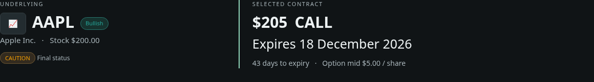
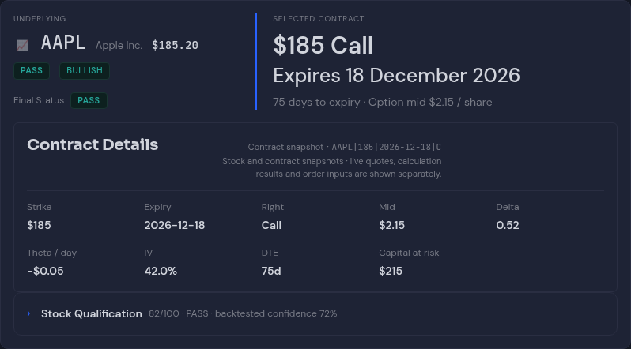
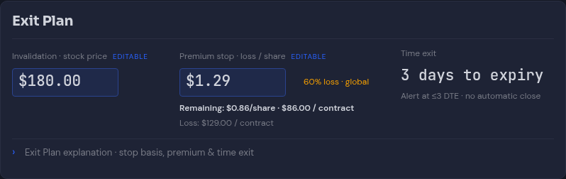
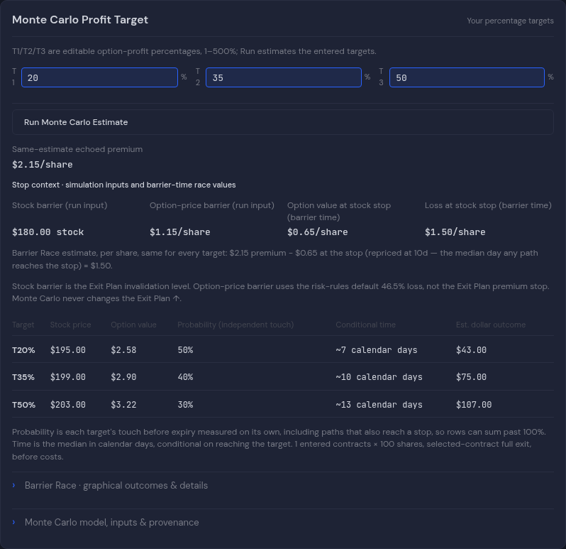
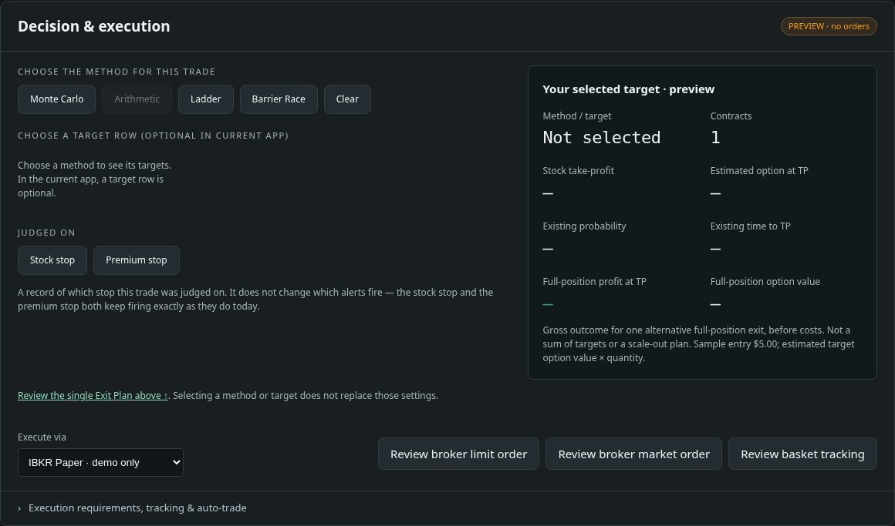
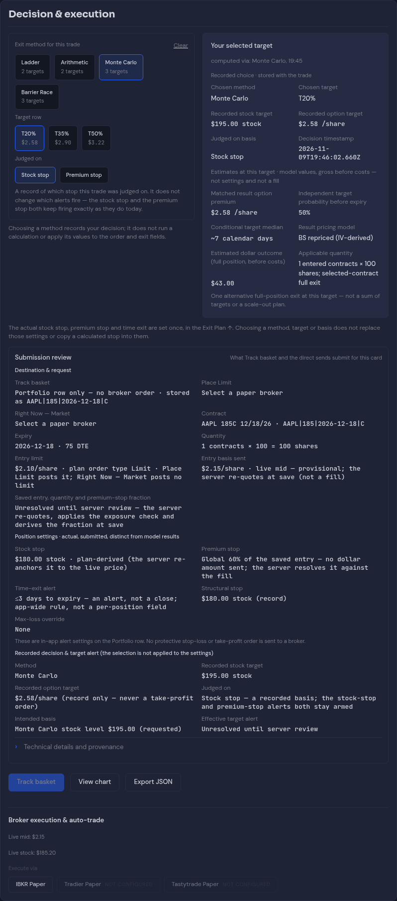

Saved reference · d8245e66

Current app: pushed commit 60c4acb6, tickets604–609 and visual batches1/2. Batch3 is not included. This is fixture data for layout comparison, not live quotes or a broker session. The reference is standalone; the app has navigation/context rails and less usable width. Compare hierarchy and information flow, not the example dollar amounts.
Full initial page · Full calculated page · Method comparison · Expanded Barrier Race







